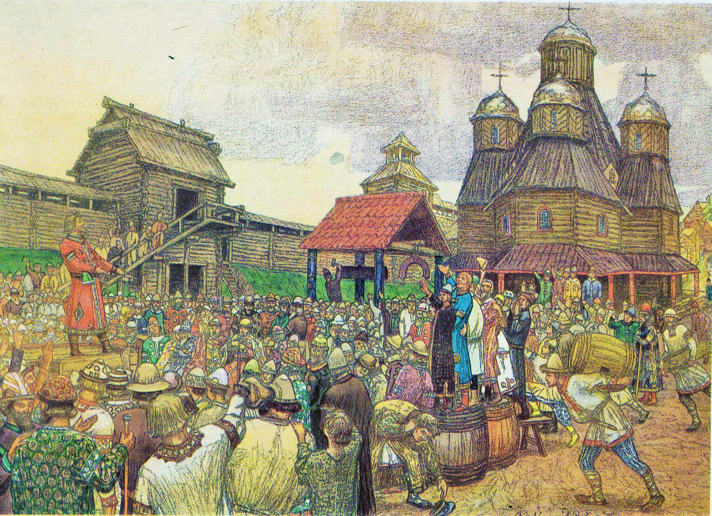
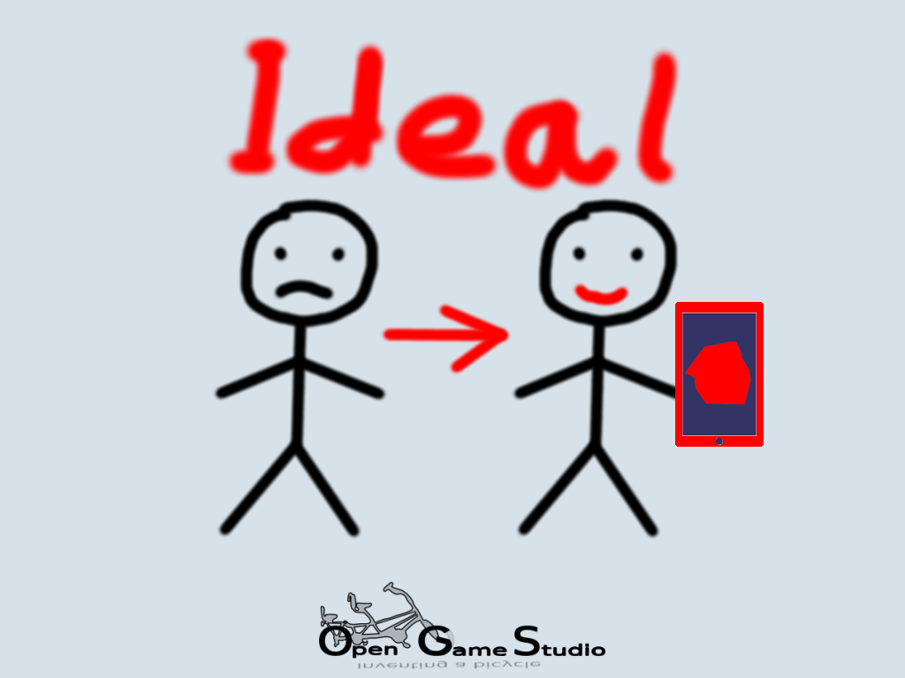

Новости
Почему я сделал личный проект учёта трат на Git+JS
2020-05-03 00:00

В этой статье Михаил поделится опытом использования Git+JS.
Здравствуйте, господа, в этой статье я поделюсь опытом создания приложения учёта трат, в частности отвечу на следующие вопросы:. . .
Обучение программированию 2019, или в поисках идеальной программы: Последовательность
2020-02-12 00:00

В этой статье Михаил расскажет об обучении ребят программированию в 2019-м году.
Предисловие
Осенью 2019-го я в третий раз участвовал в курсе обучения ребят 10-15 лет программированию в качестве одного из преподавателей. Наши курсы проходили с середины сентября по середину декабря. Каждое занятие было в субботу с 10:00 до 12:00. Подробнее о структуре каждого урока и деталях создаваемой на курсе игры можно узнать из статьи за 2018-й год.. . .
Минусы и плюсы начинания с начала
2020-01-01 00:00

Любой, кто следит за нашим прогрессом достаточно долго, может сказать, что мы много раз перезапускали разработку с нуля.
Еще до выпуска "OGS Mahjong" мы несколько раз меняли технологии "под капотом". После релиза мы неоднократно делали это снова, отбрасывая уже готовые решения.. . .
На пути к долговечным приложениям
2019-08-05 00:00

В этой статье мы расскажем о нашем первом долговечном приложении для настольных ПК - генераторе статических сайтов ПСКОВ.
Долговечность
Под долговечным приложением мы понимаем такое приложение, которое работает без единого изменения на операционных системах, выпущенных в период 2010-2030 годов. Иными словами, долговечное приложение обладает 10-летней обратной совместимостью и 10-летней прочностью. Впрочем, ПСКОВ работает даже на Windows 2000, так что у него 19-летняя обратная совместимость.. . .
Защита доступности
2019-04-16 00:00
В этой статье мы расскажем о начале усилий по защите себя от решений третьих сторон.
С первого дня существования проекта Opensource Game Studio мы используем решения третьих сторон для достижения своей цели по созданию лучших средств разработки игр. Мы использовали форумы, системы отслеживания задач, списки рассылок, социальные сети, системы контроля версий кода, хостинги, компиляторы, библиотеки и т.д.. Каждое решение третьих сторон имеет свой жизненный цикл.. . .
Обучение детей программированию
2019-02-04 00:00

В этой статье Михаил делится своим опытом обучения детей программированию.
Он расскажет о следующем:
- организация процесса обучения
- программа обучения
- игра на память. . .
Год переосмысления
2019-01-01 0:01

Этот год во-многом стал для нас годом переосмысления и определенности. Как некоторые из вас помнят, мы начинали этот проект, для создания среды для разработки игр. В течение многих лет идея развивалась от одной формы к другой, иногда изменения были значительными, в других случаях мы отбрасывали весь код и начинали заново.. . .
Идеальные игры и средства для их разработки
2018-11-19 00:00

В этой статье мы обсудим, как выглядят идеальные видеоигра и инструмент для разработки видеоигр, по нашему мнению.
Вопросы
Как вы знаете, целями Opensource Game Studio являются:. . .
OGS Mahjong 2: Demo 2
2018-10-02 00:00

Мы рады сообщить о выпуске второй демонстрации OGS Mahjong 2. Её целью были улучшение техники разработки и создание надёжной основы кроссплатформенной разработки.. . .
Страница 1 из 7